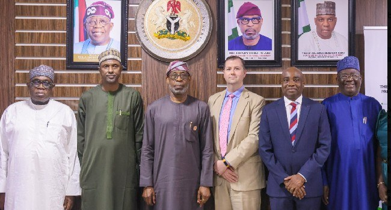

Solid Minerals: FG Inaugurates Nigeria-US Committee On Strategic Cooperation

The Federal Government has inaugurated the Nigeria-United States Committee on Strategic Cooperation in the Solid Minerals Sector in Abuja, weeks after the two countries signed a memorandum of understanding on developing Nigeria’s mining industry. The committee is intended to advance the partnership and identify ways to turn the agreement into practical outcomes.
Solid Minerals Development Minister Dele Alake rejected claims that Nigeria had sold $700 billion worth of solid minerals to the United States. He said Nigeria had not sold its mineral assets and described the agreement as a government-to-government framework intended to connect American investors with Nigerian businesses.
The memorandum was signed in September on the sidelines of the 81st United Nations General Assembly. Alake signed for Nigeria with US Deputy Secretary of State Christopher Landau at the Nigerian Mission House in New York. The stated areas of cooperation include attracting investment, sharing technology, expanding local processing and creating jobs.
Alake said the government wants mineral resources to generate more value within Nigeria and contribute to the country’s effort to reduce its dependence on oil. Local processing, he said, is now a key requirement for investors seeking mineral titles. He also said the partnership could bring together Nigeria’s resources with US capital and technology to support the mining sector.
The minister called on the committee to work diligently, identify viable investment opportunities and produce measurable results in support of President Bola Tinubu’s $1 trillion economy target. At the signing, Alake said implementation of the agreement would support the administration’s economic diversification agenda and promote industrial growth. Landau was quoted as supporting a US partnership with Nigeria.
Source: Channels TV